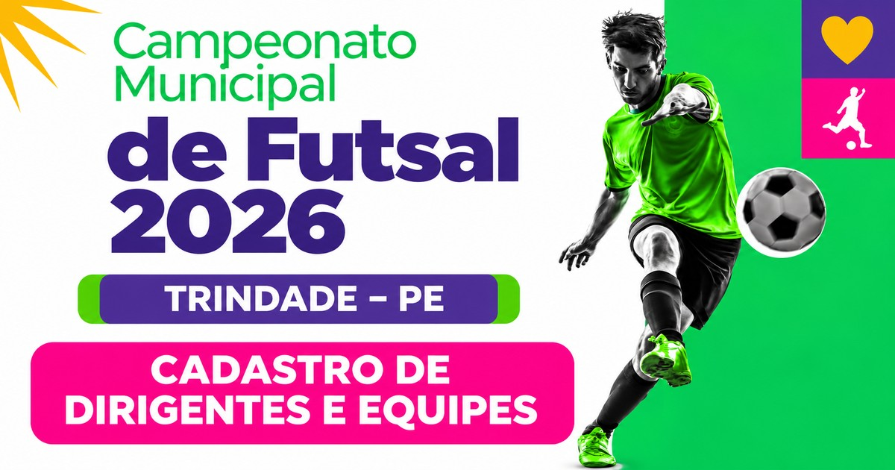

Cadastro de dirigentes e equipes
Você será encaminhado para o formulário de cadastro.
Abrir formulário de cadastro Se o formulário não abrir automaticamente, toque no botão acima.
Você será encaminhado para o formulário de cadastro.
Abrir formulário de cadastro Se o formulário não abrir automaticamente, toque no botão acima.